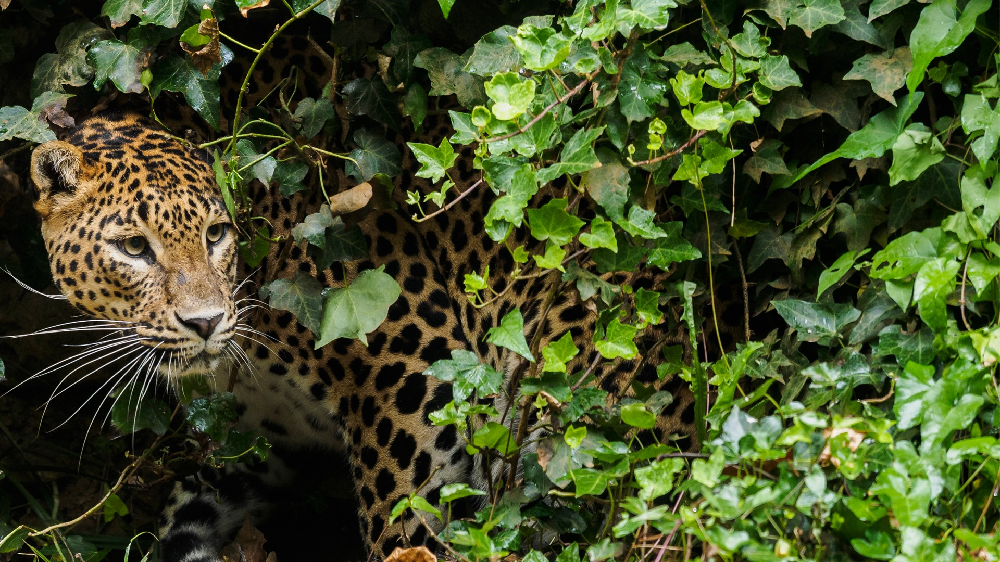
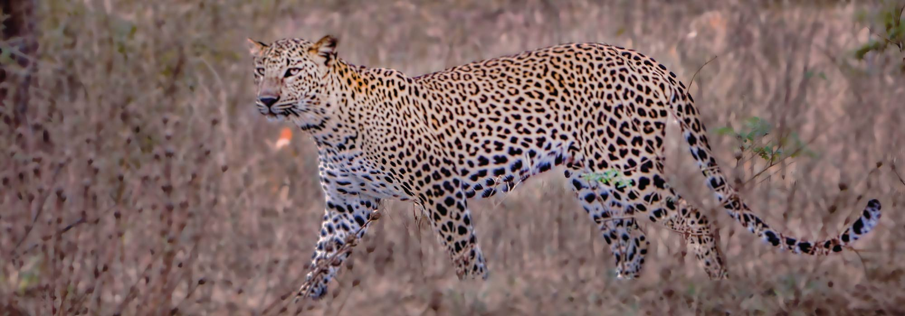

Sri Lankan Leopards: Guardians of the Emerald Isle
Where to Witness the Elusive Kings of the Wild
Yala National Park: Land of Golden Grasslands and Leopard Prowess
Journey into the heart of Sri Lanka's wilderness, where majestic leopards stalk the golden plains. Yala beckons you with thrilling safaris, promising glimpses of these elusive hunters at dawn or dusk. Witness their power and grace as they navigate the vast landscapes, sharing the stage with elephants, sloth bears, and vibrant birdlife.

Wilpattu National Park: Untamed Beauty and Leopard Enclaves
Embark on an adventure through Wilpattu's vast plains and shimmering tanks, where leopards reign supreme. This sanctuary offers unparalleled chances to observe these solitary cats, camouflaged against the golden grasslands. Immerse yourself in the park's unique biodiversity, home to spotted deer, sambar deer, and a treasure trove of endemic reptiles.

Horton Plains National Park: Misty Mountains and Serene Leopard Sightings
Ascend to the cool embrace of Horton Plains, where leopards dance amidst the mist-shrouded grasslands and vibrant rhododendron forests. Though encounters are less frequent, spotting a leopard in this ethereal landscape is a once-in-a-lifetime experience. Discover a diverse haven of endemic flora and fauna, including purple-faced langurs and graceful storks.
Vanishing Emerald Homes: Habitat Loss and Fragmentation
The emerald tapestry of Sri Lanka is unraveling as forests shrink and landscapes become fragmented. This loss of habitat cripples the leopards' hunting grounds, disrupts their movement patterns, and isolates populations, pushing them towards vulnerability.
**Consequences:**
- Reduced prey availability
- Increased competition among leopards
- Isolation of populations, leading to genetic problems and reduced resilience
Clashing with Humanity: Human-Leopard Conflict
As human settlements encroach on leopard territories and livestock becomes readily available, tensions rise, leading to conflict. This can involve livestock depredation by leopards, often resulting in retaliatory killings, further endangering the leopard population.
**Consequences:**
- Loss of leopards due to retaliatory killings and fear.
- Fear and anxiety among communities living in proximity to leopards.
- Potential for retaliatory attacks on humans, though rare.
**Mechanisms to reduce conflict:**
- Awareness programs for communities on leopard behavior, coexistence strategies, and safety measures.
- Livestock protection measures, including strong enclosures, deterrents, and improved management practices.
- Research on human-leopard coexistence to develop sustainable solutions.